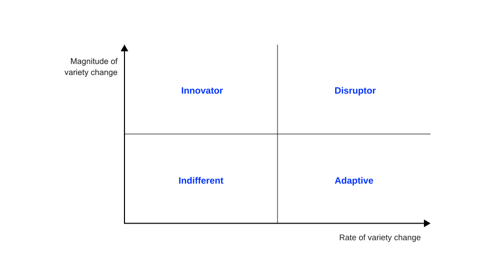
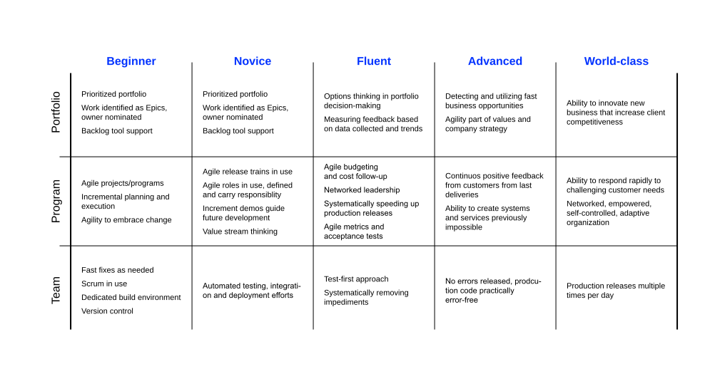

Motivation
Agile organizations are both stable and dynamic at the same time. They design stable backbone elements that evolve slowly and support dynamic capabilities that can adapt quickly to new challenges and opportunities. McKinsey & Company
Introduction
What is agile?
The term agility has been increasingly used in management literature since the late 20th century (Harraf et al., 2015).
Around the same time, agile approaches gained prominence in software development, leading to the publication of the agile manifesto in 2001 (Beck et al., 2001).
Over the past two decades, organizational theorists have focused extensively on how agile performance enable companies to successfully adapt to rapidly changing and unpredictably disruptive environments (see e.g., Adler et al., 1999; Grewal & Tansuhaj, 2001; Judge & Miller, 1991; Smith & Lewis, 2011).
Common themes
Several common themes in literature Harraf et al. (2015) have identified:
- A specific set of organizational sense-response actions that are typical for organizations operating in an environment characterized by turbulence, unpredictability, and rapid change (i.e., VUCA environments).
- Agile organizational sense-response actions can be specified using a bi-dimensional concept of magnitude of variety change1 (flexibility) and rate of generating variety change2 (speed).
- Agility is a function of environmental conditions (the industry), exhibiting varying levels of market turbulence, competitive intensity, and customer need heterogeneity.
- The likelihood of observing a positive effect of agility on performance (e.g., efficiency, innovativeness) is greater in fast-changing environments.
Towards a definition
Literature suggests that organizational agility can neither be reduced to a singular dimension nor is it appropriately calibrated in absolute terms. In terms of the four key points outlined before, organizational agility can be formally defined as follows:
It is the ability of a firm to sense and respond to the environment by intentionally changing (1) magnitude of variety and/or (2) the rate at which it generates this variety relative to its competitors (Harraf et al., 2015).
It is a firm’s ability to sense changes in its environment (like customer preferences, new technologies, etc.) and respond effectively and intentionally by adjusting what it does.
More specifically, it can do this in two main ways:
Changing the magnitude of variety
This means increasing or decreasing the range of products, services, strategies, or approaches the organization offers.
Low magnitude changes:
- A restaurant adding seasonal menu items while keeping their core menu intact
- A textbook publisher releasing updated editions with minor revisions
- A software company implementing small interface improvements through regular updates
Medium magnitude changes:
- A smartphone company introducing a “pro” version of their standard phone with enhanced features
- A bank introducing mobile banking alongside traditional services
- A manufacturer implementing flexible production techniques to customize products
High magnitude changes:
- Amazon’s evolution from online bookstore to global marketplace, cloud services provider, and entertainment studio
- Apple’s pivot from computers to revolutionizing the music industry with iPod/iTunes, then transforming mobile communications with the iPhone
- Netflix transitioning from DVD rentals to streaming to original content production
Changing the rate at which it generates this variety
This refers to how quickly an organization can adapt and innovate.
Example: If competitors are launching new products every year, and your company starts doing it every six months, you’re increasing your rate of generating variety.
The key idea is intentional adaptability—being able to sense what’s happening in the environment and deliberately adjusting how much variety and how fast you produce it, especially in comparison to competitors. Agility is not just about being flexible—it’s about being strategically responsive.
Visualization

According to Harraf et al. (2015) four classes of organizations with different competitive strengths and capacity regions for agility can be identified as innovators, disrupters, adapters, and indifferents.
Innovators identify their competitive strength in being able to identify new opportunities and strive for the ability to make movements that involve a greater degree of variety change, but at the expense of a lower or constant rate of change. They are able to respond to unfamiliar changes in the environment with great diversity.
Adapters their competitive advantage in generating a higher pace of variety change while maintaining a lower or constant level of variety change. They have a constant willingness to address change quickly, proactively or reactively.
Disrupters redefine market competition by developing capacity to overcome trade-offs by generating both higher magnitude and greater rate variety change. These organizations explore and exploit opportunities for innovation and competitive performance—they move the efficiency/flexibility tradeoff to simultaneously pursue both.
Indifferents do not engage in agile based competition in the industry and they do not anticipate the magnitude or rate of variety change to be important properties of their strategic responses.
Ambidexterity and agility
In general, ambidexterity refers to the combination of both incremental, more efficiency-oriented innovation (i.e., exploitation) and radical, novelty-oriented innovation practices (i.e., exploration) (Clauss et al., 2021).
Operational ambidexterity “relates to a firm’s dual capacity to simultaneously pursue not only the implementation of disruptive ideas [… ] but also the enhancement of the firm’s current operational speed, reliability, and cost” (Lee et al., 2015, p. 401).
IT ambidexterity relates to “the ability of firms to simultaneously explore new IT resources and practices (IT exploration) as well as exploit their current IT resources and practices (IT exploitation)” (Lee et al., 2015, p. 398).
Lee et al. (2015) shows that IT ambidexterity enables operational ambidexterity, which enhances organizational agility.
IT x organizational agility
IT competences and digital options
IT competence describes a firm’s ability to translate available IT resources into strategic digital options (Sambamurthy et al., 2003).
Digital options are IT-enabled capabilities in the form of digitized work processes and knowledge systems (e.g., digital process capital3 and digital knowledge capital4) that the firm can exercise selectively as conditions evolve (Sambamurthy et al., 2003).
These capabilities are not acquired instantaneously. They emerge from a series of linked strategic decisions about IT investment over time (Sambamurthy et al., 2003).
The richness of a firm’s digital option set therefore depends on how its digital artifacts are architected, i.e., which properties make options broad, fast, and externally extensible.
Architectural enablers
Strategic agility demands a sense-respond loop. Three structural properties of digital artifacts determine how fast and how broadly that loop can operate: modularity, reprogrammability, and programmatic interfaces.
The structural properties of digital artifacts are the architectural enablers of the two agility dimensions Harraf et al. (2015) identify: they determine how broadly a firm can change its variety (magnitude) and how fast it can do so (rate).
Harraf et al. (2015) define agility in terms of what firms must do (i.e., adapt to change magnitude and rate of variety) but not how digital technology makes this possible. The answer lies in three properties of digital artifacts: modularity, reprogrammability, and programmatic interfaces. Together they generate digital options in the sense of Sambamurthy et al. (2003): pre-positioned IT capabilities a firm can exercise selectively when environmental signals demand a response. The following slides trace each property to its strategic outcome.
Modularity x variety
Modularity decomposes a system into loosely coupled, independently deployable components.
- Each module encapsulates a well-defined function behind a stable interface
- Modules can be recombined into new configurations without redesigning the whole (Yoo et al., 2010)
- Recombinability expands the firm’s option set (i.e., the range of distinct responses it can assemble)
Modular architectures therefore directly increase the magnitude of variety change (Harraf et al., 2015): the same component pool yields a wide range of differentiated products, services, and processes on demand.
The key mechanism is recombinability. A highly modular digital platform (e.g., an ERP with open APIs, a cloud-native microservices stack) allows new capability configurations to be assembled from existing components rather than built from scratch. This expands the feasible option set without proportionally increasing cost or risk. The analogy to financial options is intentional: the firm pays an upfront modularity investment to preserve the right, but not the obligation, to exercise a specific capability later.
Reprogrammability x rate
Reprogrammability allows a digital artifact’s encoded logic to be altered without changing its physical substrate (Yoo et al., 2010).
- Business logic (e.g., pricing rules, workflows, eligibility criteria) can be updated in hours or days
- Logic fluidity decouples the pace of operational change from the pace of capital investment
- Software ships continuously; hardware refresh cycles are measured in years
This decoupling is the primary digital lever on the rate of variety change (Harraf et al., 2015): the speed at which a firm executes, tests, and revises a strategic move.
The contrast with physical assets is instructive. An automotive manufacturer changing a product line faces months of retooling lead time. A streaming platform changing its recommendation algorithm or pricing tier can do so in a single sprint. Reprogrammability converts strategic intent into operational change at market speed. Firms with clean, well-documented code and modern deployment pipelines (CI/CD) hold more valuable digital options than those running rigid legacy systems — even if the underlying hardware is identical.
Interfaces x ecosystems
Programmatic interfaces (APIs) standardize the terms on which a firm’s digital capabilities connect to and draw upon external parties.
- A published API is a formal offer to co-create value with partners, developers, and complementors
- Boundary spanning through APIs converts partner networks into real-time operational capacity
- External resources (i.e., logistics, payments, identity, AI services) become exercisable on demand
APIs are therefore the digital foundation of partnering agility (Sambamurthy et al., 2003): the ability to marshal external assets and knowledge rapidly in response to market opportunities or threats.
Without standardized interfaces, integrating an external partner requires bespoke, time-consuming technical work. With open APIs, the marginal integration cost approaches zero for each additional partner that adopts the standard — creating a network-effect logic. The more partners connected to a firm’s API ecosystem, the larger the pool of capabilities the firm can activate without internal investment. Firms with rich API ecosystems (e.g., Amazon, Salesforce, Stripe) possess partnering agility that is structurally unavailable to firms whose systems remain closed. Boundary spanning through APIs is not merely a technical choice; it is a strategic decision about where the organizational boundary sits, and how permeable it is.
From digital traits to agility
| Digital trait | Mechanism | Strategic outcome |
|---|---|---|
| Modularity | Recombinability | Maneuverability: breadth of feasible responses |
| Reprogrammability | Logic fluidity | Versatility: speed of operational change |
| Interfaces (APIs) | Interconnectivity | Ecosystem agility: depth of externally leveraged capacity |
Each trait generates digital options: pre-positioned capabilities the firm can exercise selectively as environmental conditions evolve (Sambamurthy et al., 2003).
The table should be read as a causal chain, not a typology. A firm that lacks modularity cannot easily recombine — its maneuverability is structurally limited regardless of strategic intent. A firm running on rigid, non-reprogrammable systems cannot alter its logic at market speed; it pays an invisible tax on every strategic move. A firm with closed proprietary integration points cannot expand its capacity through partners without slow, costly integration projects. The implication for IT investment: modularity, reprogrammability, and open interfaces should be treated as strategic infrastructure, not technical preferences.
The organizational mirror
The same structural properties that make digital systems agile must be present in organizational design for digital options to be exercisable.
| Organizational design | Mechanism | Agility outcome |
|---|---|---|
| End-to-end teams | Team recombination (i.e., recombinability) | Structural maneuverability |
| Sprint / PI planning | Priority reconfiguration (i.e., fluidity) | Strategic versatility |
| Defined team contracts | Reduced coupling (i.e., interconnectivity) | Inter-team agility |
A modular technology stack paired with siloed departments cannot recombine quickly; both layers must be co-designed (Sanchez & Mahoney, 1996; Skelton & Pais, 2019).
(Sanchez & Mahoney, 1996) argue that the design hierarchy runs in both directions: modular product architectures not only permit but require modular organizational forms to be sustained. A firm that decomposes its software into microservices but keeps functional silos will find that the technical recombinability is never actually exercised — because the organizational structure cannot authorize or coordinate the recombination fast enough. The same logic applies to reprogrammability: sprint and PI planning are the organizational equivalent of CI/CD pipelines, converting strategic intent into operational change without formal restructuring. Skelton & Pais (2019) make the interface argument explicit through team interaction modes — X-as-a-Service, collaboration, facilitating — which are organizational APIs in all but name.
Types of agility
Types of agility supported by IT as identified by Sambamurthy et al. (2003):
- Customer: Ability to co-op customers in exploration and exploitation of innovation opportunities (source, co-creators, testers).
- Partnering: Ability to leverage assets, knowledge, and competencies of suppliers, distributors, contract manufactors and logistics providers in the exploration and exploitation of innovation opportunities.
- Operational: Ability to accomplish speed, accuracy, and cost economy in the exploitation of innovation opportunities.
Agile IT project management
The approach to IT project management defines how IT resources are developed, orchestrated, and, best case, translated into strategic digital options.
The foundation of methods to agile IT project management is the agile manifesto (Beck et al., 2001), which defines following key values and principles:
- Individuals and interactions over processes and tools
- Working software over comprehensive documentation
- Customer collaboration over contract negotiation
- Responding to change over following a plan
These key values and principles aim to enable organizations to better deal with rapid changes in customer demands, markets and technology by, e.g., decreasing lead-time, increasing change rate, and the degree of variety change.
Agile at scale
Introduction
Agile project management methods were originally designed for use in small, single-team projects (Boehm & Turner, 2005).
Compared to small projects and teams, large projects and organizations require additional coordination (i.e., inter-team coordination)
In addition, adopting agile at scale often requires tradeoffs as interacting with organizational units that are often non-agile in nature is required (e.g., HR) and/or a change of the entire organizational culture (Misra et al., 2010) .
Another key challenge is that management must move away from traditional hierarchical models (e.g., lifecycle-based) to autonomous, iterative models (e.g., feature-based), which requires a change of mindset.
Definition
Dikert et al. (2016) define large-scale as software development organizations with 50 or more employees or at least six teams.
All people do not need to be developers, but must belong to the same organization and develop a common product or project, and thus have a need to collaborate.
This definition includes both software development companies and as the parts of larger (non-software) organizations that develop software (i.e., the application development unit within corporate IT).
Transformation challenges
Dikert et al. (2016) identified challenges in nine cateogires for large-scale agile transformations
- Resistance to change (e.g., general resistance, management resistance)
- Lack of investment (e.g., lack of coaching, training, adapting physical spaces)
- Difficulties of implementation (e.g., lack of guidance, poor customization)
- Coordination challenges in multi-team environment (e.g., interfacing, autonomous team model, technical consistency)
- Different approaches (e.g., different interpretations, old and new side by side)
- Hierarchical management and organizational boundaries (e.g., silos kept, old-styled management)
- Requirements engineering challenges (e.g., gap between long and short-term planning)
- Quality assurance challenges (e.g., lack of automated testing)
- Integrating non-development functions (e.g., adjusting to incremental delivery pace)
Frameworks
To address challenges to adopting agile methods in large, more traditional organizations, several agile scaling opportunities have been created (Dikert et al., 2016; Uludağ et al., 2021, 2022).
Examples
| Short name | Long name/topic | Publ. year | Cur. year | Stand. org. |
|---|---|---|---|---|
| LeSS | Large-Scale Scrum | 2013 | 2015 | The Less Co. |
| Nexus | Scaling Scrum | 2015 | 2018 | Scrum.org |
| SAFe | Scaled Agile Framework | 2011 | 2020 | Scal. Ag., Inc. |
| Spotify | Scaling agile | 2014 | 2014 | Spotify |
Maturity

SAFe
What SAFe is
A framework developed by Dean Leffingwell (2011) as a synthesis of Lean, Agile, and DevOps principles for enterprise-scale delivery
- Four configurations: Essential, Large Solution, Portfolio, and Full SAFe
- Provides an explicit organizational model (roles, events, artifacts) rather than a set of principles to interpret
- The most widely adopted scaling framework, and the most contested (Dikert et al., 2016)
SAFe’s wide adoption is partly a function of its completeness: it specifies not just what to do but who does it, at what cadence, and in what governance structure. This makes it attractive to large organizations that need a migration path from traditional program management. It also makes it controversial in the agile community, which has historically privileged minimalism and team autonomy. Understanding SAFe analytically (rather than as a vendor prescription or a community target) requires mapping it onto the theoretical frameworks already established in this unit.
Important concepts
- Agile Release Train (ART): 50–125 people, long-lived, aligned to a value stream; the primary unit of delivery and planning
- Program Increment (PI): Fixed timebox of 8–12 weeks; the cadence that synchronizes all teams on the ART
- PI Planning: Two-day synchronization event; all ART members align on objectives, dependencies, and risks
- Iterations: 2-week sprints nested within the PI; teams deliver working software increments
- Innovation and Planning (IP) iteration: A dedicated iteration at the end of each PI for exploration, technical debt reduction, and planning preparation
- Inspect and Adapt (I&A) workshop: Structured retrospective closing each PI; identifies and addresses systemic impediments
The four configurations
SAFe scales by composing layers. Each configuration adds the layer above to the previous one.
| Configuration | Adds | Suits organizations with |
|---|---|---|
| Essential | One ART, PI cadence, core ceremonies | A single value stream, 50–125 people |
| Large Solution | Solution Train coordinating multiple ARTs | Complex solutions requiring several ARTs and suppliers |
| Portfolio | Lean Portfolio Management, strategic themes, value stream funding | Multiple value streams requiring strategic alignment |
| Full SAFe | All layers active | Enterprises operating across all of the above |
Configurations are not maturity stages. An organization with one value stream stays at Essential and is not “less mature” than one running Full SAFe, but it has a different problem.
The configuration model is the most practical part of SAFe and the most often misunderstood. Many organizations adopt Full SAFe by default, assuming more layers means more agility. The reverse is closer to true: each additional layer is additional coordination overhead, justified only when the underlying problem (multiple ARTs on one solution; multiple value streams competing for portfolio funding) actually exists. The official SAFe Big Picture diagram visualizes this nesting; if you want to show it directly, link out to scaledagileframework.com — the diagram is copyrighted and should not be reproduced.
Example
All four configuration levels are simultaneously active in one company, here Zalando (Berlin-based online fashion retailer operating across Europe wit approx. 17,000 employees):
- Feature team: The checkout team owns the moment a customer clicks “place order” end to end (UI, API, database, confirmation email); ~9 people, ships independently
- ART: ~12 feature teams (~110 people) aligned to the online shopping value stream create the customer experience; synchronizes on a 10-week PI cadence
- Solution Train: Four ARTs (customer experience, mobile, search & personalization, payments) jointly deliver the integrated Shopping product
- Portfolio: Shopping is one value stream alongside Marketplace, Logistics Solutions, Connected Retail, and Marketing Services, each competing for strategic investment
The four SAFe configurations are not separate levels of “agile maturity” or product offerings to choose between. They are the four scopes at which the modularity argument needs to operate simultaneously in a company of this size before coherent customer experiences can ship without coordination collapse.
Three scales, one logic
Zalando’s checkout team ships a button. Zalando’s shopping Solution Train ships an experience. Zalando’s portfolio ships a company.
Implements the modularity logic of “the digital” (Sanchez & Mahoney, 1996; Yoo et al., 2010) at three different scales: each layer adds coordination only where the lower layer’s autonomy is insufficient.
Core competencies
SAFe organizes business agility around seven competencies:
- Lean-agile leadership: developing leaders who model the mindset
- Team and technical agility: high-performing teams with sound engineering practices
- Agile product delivery: customer-centric, design-led continuous delivery
- Enterprise solution delivery: building large, coordinated complex solutions
- Lean portfolio management: aligning strategy and execution at portfolio level
- Organizational agility: lean-thinking structures and practices
- Continuous learning culture: relentless improvement and innovation
SAFe in the Harraf framework
SAFe is engineered for adapters more than disrupters (Harraf et al., 2015).
The cadence-based design optimizes the rate of variety change through synchronized inspect-and-adapt loops, but the same cadence limits the magnitude per cycle..
SAFe is not “more agile” in an absolute sense. It is a particular design point in the agility space.
| Harraf quadrant | Fit | Reasoning |
|---|---|---|
| Innovators (high magnitude, lower rate) | Moderate | PI scope limits per-cycle magnitude; enabler epics partially compensate |
| Adapters (high rate, moderate magnitude) | Strong | PI cadence and I&A workshops are purpose-built for this position |
| Disrupters (high on both) | Limited | Synchronized cadence becomes a ceiling on per-increment magnitude |
| Indifferents (low on both) | n/a | SAFe is not designed for stable environments |
Organizations adopting SAFe to become disrupters may find that the cadence infrastructure, intended to increase rate, paradoxically constrains magnitude by synchronizing all teams to the same planning horizon. Firms already operating as disrupters often develop lighter-weight coordination models precisely because they need magnitude flexibility that a fixed PI cadence would foreclose.
ARTs x magnitude
Agile Release Trains instantiate the modularity argument at the organizational level.
- An ART is a stable, long-lived team-of-teams aligned to one development value stream
- Teams within an ART are feature teams that own a slice of customer value end to end (e.g., checkout, search), not component teams that own a technical layer (e.g., frontend, database)
- Shared services and platform teams provide common capabilities behind stable interfaces
- Between PIs, teams can be recombined within or across ARTs without organizational restructuring
ARTs therefore expand the firm’s magnitude of variety change (Harraf et al., 2015): the same pool of teams can be reconfigured to serve a wider range of strategic responses without redesigning the organization.
PI cadence x rate
The Program Increment instantiates reprogrammability at the organizational level.
- Each PI is a periodic re-execution of organizational logic: priorities, scope, capacity allocation, and dependencies are all set anew
- The Inspect & Adapt workshop functions as continuous deployment of organizational improvements
- Reconfiguration happens without restructuring: no reorgs, no formal change management, just the next PI
- The IP iteration provides the buffer for retooling before the next cycle begins
PI cadence therefore directly governs the rate of variety change (Harraf et al., 2015): the speed at which the organization can intentionally redirect its delivery capacity.
Team interactions x ecosystems
Team interaction patterns instantiate the programmatic interface argument (Skelton & Pais, 2019).
- Collaboration: two teams work closely together for a bounded period, typically during discovery or when boundaries are unclear
- X-as-a-Service: one team consumes another team’s capability through a defined “API” (documented service, predictable behavior, low-friction integration)
- Facilitating: one team helps another build new capability and then steps back
The Architectural Runway is the internal technical equivalent: pre-built code, components, and infrastructure exposed to ARTs as a stable platform on which near-term features can be built without redesign.
Together, these patterns are the foundation of partnering and ecosystem agility (Sambamurthy et al., 2003): they lower the coupling between organizational units so that integration cost stays bounded as the network grows.
SAFe x ambidexterity
How does SAFe structure the exploration–exploitation balance (Lee et al., 2015)?
Exploitation: the PI delivery cadence with committed team and ART objectives drives execution discipline; teams deliver working increments against a known plan.
Exploration: the IP iteration and Architectural Runway provide structural capacity for innovation, debt reduction, and capability building outside normal delivery pressure.
Lee et al. (2015) show that IT ambidexterity enables operational ambidexterity, which in turn enhances organizational agility. SAFe encodes this claim structurally: the IP iteration is not merely a buffer or cleanup week; it is the exploration half of the ambidexterity pair, given formal time and governance protection.
The critical question the framework cannot answer by design is whether the IP iteration is in practice used for genuine exploration or colonized by backlog clearance. That depends on leadership behavior.
Agility in a nutshell
| Digital trait | SAFe analog | Mechanism |
|---|---|---|
| Modularity | ARTs and Solution Trains | Recombinable team-of-teams aligned to value streams |
| Reprogrammability | PI cadence, I&A, IP iteration | Periodic re-prioritization without restructuring |
| Programmatic interfaces | Team interaction patterns, Architectural Runway | Standardized integration points across ARTs |
SAFe is, read this way, an applied instance of Sanchez & Mahoney (1996)’s claim: modular technical architectures both require and produce modular organizational forms.
Challenges
SAFe addresses the agile challenges discussed by Dikert et al. (2016), but it can also exacerbate them.
Challenges addressed by SAFe’s structural mechanisms
- Coordination challenges: PI Planning for explicit dependency management
- Requirements engineering challenges: portfolio-to-PI-to-iteration hierarchy
- Hierarchical management: Lean Portfolio Management replaces traditional project governance
Potentially aggravated by SAFe’s design choices
- Resistance to change: comprehensiveness can trigger resistance
- Different approaches: detailed prescriptions create friction when teams adapt selectively
- Integrating non-development functions: SAFe assumes broad organizational participation that many implementations never achieve
SAFe was explicitly designed to address the coordination and requirements engineering challenge clusters, and it does so through structural means that most large organizations find usable. The irony is that its structural thoroughness can aggravate the cultural challenges: resistance to change intensifies when the change is visible and comprehensive; different-approaches problems multiply when teams deviate from a detailed reference model; and non-development integration remains difficult precisely because SAFe does not extend its prescriptions into HR, finance, or legal with the same rigor it applies to delivery.
The SAFe paradox
The framework that scales agility relies on heavy process scaffolding, in tension with the manifesto’s “individuals and interactions over processes and tools.”
Potential dysfunctions
- Agile theater: ceremonies without mindset change; teams follow the calendar but not the principles
- Process ossification: the cadence becomes the goal; teams optimize for PI completion rather than value delivery
- Top-down/bottom-up tension: portfolio governance constrains the team autonomy that agile requires
A firm can be procedurally compliant with SAFe and still be an indifferent on the Harraf matrix, going through the motions of synchronized cadence without generating meaningful variety change (Harraf et al., 2015).
The paradox is not a reason to reject SAFe; it is a reason to deploy it with clarity about what process can and cannot accomplish. SAFe can establish coordination infrastructure, synchronize planning horizons, and provide a shared vocabulary. It cannot install a growth mindset, generate psychological safety, or make leaders comfortable with distributed decision-making.
Organizations that treat SAFe as a transformation destination rather than a transformation vehicle are precisely the ones most at risk of the three failure modes listed. The Harraf framing is useful here because it externalizes the question: agility is defined relative to the environment and competitors, not relative to framework adoption.
When SAFe is the right answer
SAFe suits organizations with:
- Regulatory or contractual planning horizons that require multi-quarter predictability
- Large existing application portfolios with significant dependency and migration management needs
- Mixed agile and non-agile interfaces
- A need for a shared governance language across business and IT at scale
SAFe suits less well when:
- The organization is small or its teams are already high-performing and loosely coupled
- Products operate on sub-monthly feedback cycles where PI cadence introduces overhead without value
The fit conditions are not a defense of SAFe; they are a recognition that framework choice is a design decision, not a market-share decision. The State of Agile reports consistently show SAFe as the most adopted scaling framework precisely because it provides a usable migration path for traditional program management organizations. The same organizations that find SAFe most natural are often those for which disruption-level agility is neither achievable nor necessary in the near term (e.g., regulated industries, defense contractors, large enterprise software vendors).
Firms that need to move toward the disrupter quadrant on the Harraf matrix often require a fundamentally different organizational design, not a larger or more disciplined version of SAFe.
Literature
Footnotes
Magnitude of variety change includes the decision alternatives generated, different strategies deployed, new products and lines introduced, non-routine tasks added to the repertoire of routine tasks, and product variations offered.↩︎
Rate of variety change—defines the temporality of change and relates to the change in variety per unit of time.↩︎
Digital process capital is the IT-enabled inter- and intra-organizational work processes for automating, informating, and integrating activities (e.g., customer acquisition, order fulfillment, supply chain, product innovation, and manufacturing flow) and creating a seamless flow of information (Sambamurthy et al., 2003, p. 247).↩︎
Digitized knowledge capital is the IT enabled repository of knowledge and the systems of interaction among organizational members to generate knowledge sharing of expertise and perspectives (Sambamurthy et al., 2003, p. 247).↩︎